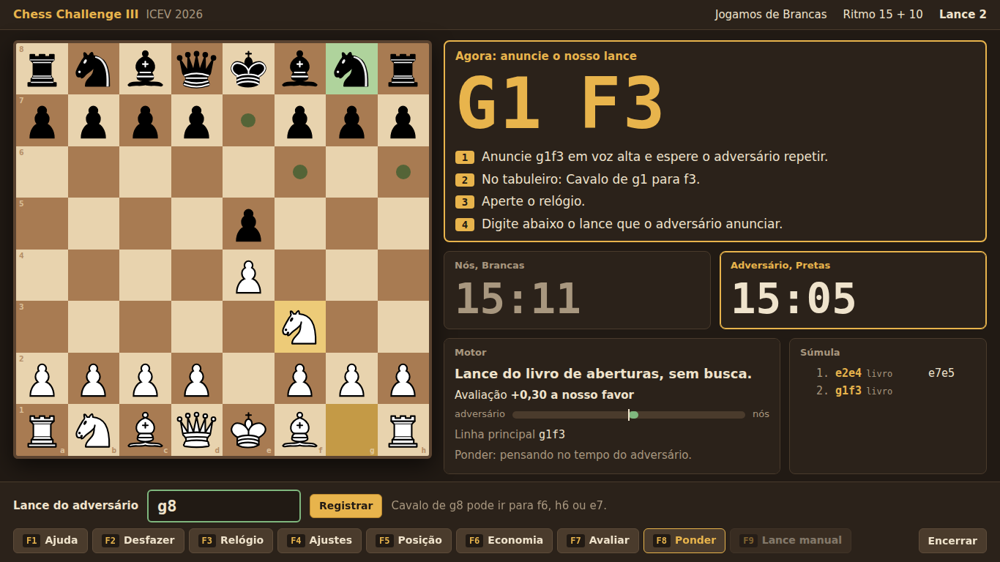
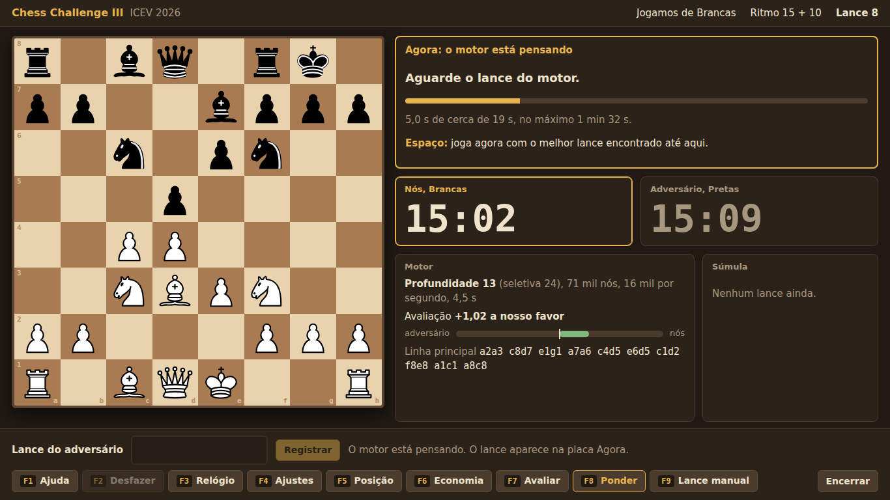

Chess Challenge III
Motor de xadrez para o torneio do ICEV 2026. O Stockfish 19 busca e avalia; a gestão de tempo é da equipe e decide quanto ele pensa em cada lance. O motor próprio, em Python, fica de reserva, e três interfaces levam tudo para a mesa de jogo.
Visão geral
No torneio, o Stockfish 19 faz a busca e a avaliação, e a gestão de tempo
da equipe decide quanto ele pensa em cada lance e quando para. O motor próprio, todo em
Python e todo da equipe, fica de reserva e é escolhido na tela inicial. O operador conversa com o
motor por uma interface no navegador, no terminal ou em modo texto. A biblioteca
python-chess só representa o tabuleiro e gera os lances legais (FAQ item 14).
O que é da equipe
O FAQ item 1 permite usar o Stockfish, declarado no credenciamento, e o item 2 pede pelo menos um componente decisório de autoria própria:
| Motor | Componente | De quem |
|---|---|---|
| Torneio | Gestão de tempo: time_manager.py, que controla o Stockfish por meio de motor_stockfish.py | da equipe |
| Torneio | Busca e avaliação: Stockfish 19 e a rede neural dele | de terceiros, declarado |
| Reserva | Avaliação (evaluation.py), busca (search.py) e gestão de tempo | da equipe |
As interfaces (web.py, tui.py, main.py), o registro da partida
(session.py, logger.py), o livro consultado antes do motor e as ferramentas de
teste também são da equipe. O Stockfish, a rede neural dele, as tablebases Syzygy e os valores
iniciais da tabela PeSTO são de terceiros e não contam como autoria.
Números medidos
| Medição | Resultado |
|---|---|
Stockfish 19 no notebook da equipe, 4 threads e 2048 MB (tools/bench_stockfish.py, 05/11/2026) | 1,9 milhão de nós/s |
| Nossa gestão de tempo contra a do próprio Stockfish (o mesmo Stockfish dos dois lados, 40 s + 0,4 s, operador simulado) | +0 =12 −0, com 34% menos tempo por lance |
| Ensaio no ritmo real (15 + 10) pela sessão do torneio, contra o Stockfish puro. Operador real de 5 s por lance, motor configurado com 4 s, F3 a cada 10 lances (05/11/2026) | empate em 29 lances; relógio final 10:23 contra 3:46; operador recalibrado para 5,0 s |
| Motor próprio, versão 2 contra a versão anterior (40 partidas, 20 s + 0,2 s, mesma gestão de tempo) | +38 =2 −0 |
| Motor próprio: profundidade em 5 s, posições de meio-jogo | 12 a 17 (antes 5 a 8) |
| Motor próprio: velocidade no notebook da equipe, modo de energia normal (medida em 04/11/2026) | 16 a 18 mil nós/s |
| A mesma velocidade no modo de economia de energia | ≈ 6 mil nós/s |
| Ritmo do torneio simulado (3 + 2 com 0,8 s de operador) | nunca estourou o relógio |
| Velocidade do motor com a interface aberta, em relação a sem ela | 96% (terminal), 94% (navegador) |
Os números vêm de partidas e medições feitas com as ferramentas da pasta tools/
e com test_engine.py; a seção Testes e validação explica como repetir.
Declaração para o credenciamento (FAQ item 1)
| Item | Declaração |
|---|---|
| Projeto-base | Stockfish 19 (versão oficial sf_19) na busca e na avaliação; jfplandim/Chess, commit ccee6c7, no motor próprio e nas interfaces |
| Autoria própria (item 2) | Gestão de tempo, que controla o Stockfish; no motor reserva, também a avaliação e a busca |
| Licença (item 1) | Stockfish em GPLv3, rodando como programa separado (UCI), sem alteração no código dele. Baixado por tools/baixar_stockfish.py, fora do repositório. Código-fonte da versão |
| Bibliotecas (item 14) | chess 1.11.2 (python-chess) para tabuleiro e lances legais; textual 8.2.8 só para a interface no terminal. Ambas em requirements.txt. A interface no navegador usa só a biblioteca padrão do Python. Programa externo: Stockfish 19. |
| Livro (item 3) | Linhas clássicas embutidas em book_and_tb.py, até 10 meios-lances, usadas pelos dois motores |
| Tablebases (item 4) | Syzygy de até 5 peças, baixadas antes do evento; o Stockfish recebe SyzygyProbeLimit 5 |
| Hardware (itens 5 a 8) | Notebook da equipe, só CPU: o Stockfish usa todos os threads e uma tabela de transposição proporcional à RAM (no notebook de testes, 4 threads e 2048 MB). Sem GPU: o Stockfish não usa |
| Modelos (item 15) | A rede neural (NNUE) que vem dentro do Stockfish 19: peso de terceiros, não conta como autoria. Nenhum peso treinado pela equipe. |
| Rede (item 14) | Nenhuma requisição externa durante as partidas; a interface no navegador só escuta em 127.0.0.1 |
Instalar e rodar
Requer Python 3.10 ou mais novo (testado no 3.14). Use o CPython: para este motor ele é mais rápido que o PyPy, porque os bitboards de 64 bits viram inteiros grandes no PyPy.
- Instale as dependências, com internet, antes do evento:
pip install -r requirements.txt - Baixe o Stockfish 19 (cerca de 80 MB, instalado em
../stockfish/, fora do repositório). O script escolhe o arquivo do sistema, confere o SHA-256 publicado no GitHub e testa o executável:
Se esquecer, as interfaces avisam: ao abrir,python tools/baixar_stockfish.pyweb.py,tui.pyemain.pyconferem se o Stockfish está instalado e roda neste computador e, se não, perguntam “Instalar o Stockfish 19 agora? [S/n]”. Enter instala (com internet);nsegue com o motor próprio. - Baixe as tablebases de até 5 peças (opcional, cerca de 940 MB). Sem elas os dois motores jogam normalmente:
python tools/baixar_syzygy.py - Valide o motor antes de cada partida. Tem que terminar com “TODOS OS TESTES PASSARAM”,
e o teste 12 tem que mostrar “Stockfish 19”:
python test_engine.py - Abra uma interface, já sem internet:
python web.py # no navegador: http://127.0.0.1:8765 python tui.py # no terminal python main.py # modo texto, reserva
Durante a partida
O FAQ item 10 define o protocolo da mesa. As interfaces guiam o operador em cada passo:
- Anunciar. Quando o motor joga, a placa Agora mostra o lance em letras
grandes, em UCI (como
g1f3), e um bipe avisa. O operador anuncia em voz alta. - Confirmar. A equipe adversária repete o lance.
- Mover e apertar o relógio. A placa descreve o movimento (“Cavalo de g1 para f3”, “Roque pequeno: rei de e1 para g1 e torre de h1 para f1”, promoções e capturas en passant).
- Registrar o lance do adversário. Digite o que ele anunciar e aperte Enter. Antes do Enter a interface já diz se o lance é legal e o que ele faz. Também dá para clicar na peça e depois na casa de destino.

g8): o tabuleiro marca os destinos possíveis.Teclas
As mesmas no navegador e no terminal. No navegador, todas também são botões.
| Tecla | O que faz |
|---|---|
| Enter | Registra o lance digitado. Com o motor pausado, manda o motor pensar. |
| Espaço | Enquanto o motor pensa, joga agora com o melhor lance encontrado. |
| Esc | Limpa o que foi digitado ou fecha o diálogo. |
| F1 | Ajuda. |
| F2 | Desfaz o último meio-lance (e para o motor, se ele estiver pensando). |
| F3 | Sincroniza com o relógio físico (MM:SS). |
| F4 | Ajustes: segundos do operador, fator de tempo, contempt (só motor próprio), pondering e som. |
| F5 | Corrige a posição por FEN. O tabuleiro físico é a referência. |
| F6 | Modo economia: o motor usa metade do tempo por lance. |
| F7 | Avaliação estática da posição, sem busca. |
| F8 | Liga ou desliga o pondering. |
| F9 | Registra um lance nosso diferente do motor (regra da peça tocada). Vai ao log como MANUAL. |
| Encerrar (Ctrl+Q no terminal) | Resultado declarado pelo árbitro (abandono, acordo, queda de bandeira) ou sair e retomar depois. |
Situações comuns
| Situação | O que fazer |
|---|---|
| Digitei errado o lance do adversário | F2 desfaz; se o motor já estava pensando, ele para. Digite o lance certo. |
| O tabuleiro físico ficou diferente do programa | F5 e o FEN da posição real. O histórico de repetição recomeça a partir dela. |
| Tocamos numa peça e tivemos de jogar outro lance | F9, digite o lance que foi jogado. |
| O relógio do programa se afastou do físico | F3 a cada uns 10 lances, com o que o relógio físico mostra. A sincronização também mede o operador: se ele estiver mais lento do que o configurado, o custo por lance sobe sozinho e a tela avisa o valor novo. Um valor improvável, como 1230 no lugar de 12:30, pede confirmação; 12.30 com ponto vale como 12:30. |
| Posição morta e a melhor de 3 pode ir para o desempate por tempo | F6: o desempate soma o tempo restante das três partidas (FAQ item 12). |
| Armageddon | Com o motor próprio, o contempt já vem ajustado: com Brancas evita o empate; com Pretas, procura. O Stockfish não tem contempt e avalia o empate como 0. |
| O Stockfish não abriu | Na tela inicial, escolha o motor próprio (M) e jogue com ele. Se o Stockfish cair no meio da partida, vale o melhor lance que ele já tinha; se ele não reabrir, a partida segue com o motor próprio e a tela avisa. |
| O árbitro declarou o resultado | Encerrar e escolha o resultado; ele vai para o log. |
| O notebook travou ou a janela fechou | Rode a interface de novo e escolha Retomar partida. Depois confira os relógios. |
Interfaces
Três formas de jogar a mesma partida. As duas primeiras compartilham a lógica de
session.py e o arquivo de salvamento: uma retoma a partida da outra, com o mesmo motor.
Nas duas, a tela inicial escolhe o motor: Stockfish (o padrão quando ele está instalado) ou o próprio, de reserva (tecla M), e o desempenho do Stockfish: Ultra, Médio ou Baixo (tecla D; veja Stockfish e o nosso tempo). Durante a partida, o topo da tela mostra o motor em uso, por exemplo “Stockfish 19 (Ultra)”.
No navegador: python web.py
Um servidor local abre http://127.0.0.1:8765 no navegador; o terminal só mostra a conferência
do Stockfish e esse endereço. A página tem tabuleiro clicável com peças desenhadas, a placa de anúncio, relógios,
motor ao vivo, súmula e botões para todos os comandos.
- Só nesta máquina: o servidor escuta apenas em
127.0.0.1e a página não carrega nada da internet. Um código gerado a cada execução impede que outra página do navegador mande comandos para a partida. - A partida mora no
web.py, não na aba: fechar ou recarregar a página não perde nada. O F5 desta página corrige a posição em vez de recarregar. - Para desligar: Encerrar > Sair e retomar depois, ou Ctrl+C no terminal.
--porta 9000usa outra porta;--sem-navegadornão abre o navegador sozinho.- Esta documentação também fica em
/documentacaoenquanto oweb.pyestá rodando.

No terminal: python tui.py
A mesma interface em modo texto, feita com Textual: placa com o lance em letras de bloco, tabuleiro com fichas (letras R, D, T, B, C, P ou símbolos), relógios grandes e as mesmas teclas. O rodapé aceita clique, útil se o terminal capturar alguma tecla F (o GNOME Terminal usa o F1). Maximize o terminal: o ideal é pelo menos 120 × 36 caracteres.
Modo texto: python main.py
A interface original, por comandos digitados; ela pergunta o motor junto com as outras configurações: undo, fen, forcar,
tempo, operador, fator, contempt, ponder,
avaliar, log e sair. Ao começar, ela abre no navegador um tabuleiro
que se atualiza sozinho a cada lance (tabuleiro.html, contribuição do PR #2). Serve de reserva
se as outras duas não abrirem.
UCI: python uci.py
Protocolo padrão para programas como Arena, CuteChess e En Croissant, usado também pelo
tools/match.py. Opções: Motor (Proprio ou Stockfish),
Desempenho (Baixo, Medio ou Ultra),
Threads, Hash, Move Overhead, OwnBook, Ponder,
Contempt, SyzygyPath e Log.
Salvamento e retomada
A cada lance, a partida é gravada em logs/partida_em_andamento.json (cor, ritmo, lances,
relógios, ajustes e o caminho do log). Ao abrir a interface de novo, aparece Retomar partida:
ela reconstrói a posição, continua o mesmo log e pede para conferir os relógios. Começar uma partida
nova guarda a anterior em partida_salva_anterior.json em vez de apagar.
Arquitetura
O navegador e o terminal usam session.py, que cria o motor escolhido na tela inicial;
o UCI escolhe pela opção Motor, e o modo texto pergunta ao começar. No motor do torneio,
motor_stockfish.py consulta o livro e as tablebases, deixa o Stockfish pensar e, a cada
profundidade concluída, a gestão de tempo decide se ele continua.
Arquivos
| Arquivo | Responsabilidade |
|---|---|
motor_stockfish.py | Motor do torneio: abre o Stockfish por UCI, consulta o livro e as tablebases primeiro e deixa o Stockfish pensar sem limite; a gestão de tempo decide quando parar. Mesma interface do motor próprio. |
search.py | Busca do motor próprio:aprofundamento iterativo, aspiração, PVS, tabela de transposição, quiescência, SEE, podas e reduções, lances em estágios, repetição, tablebases na busca. |
evaluation.py | Avaliação do motor próprio: tapered eval, mobilidade, segurança do rei, estrutura de peões com cache, peões passados, ameaças, finais e mop-up. |
time_manager.py | Gestão de tempo dos dois motores: orçamento por lance com o custo do operador, limites flexível e rígido, extensão por instabilidade. |
book_and_tb.py | Livro (trava de 10 meios-lances) e Syzygy (até 5 peças). |
session.py | Partida das interfaces: cria o motor escolhido, registra lances, relógio, log, pondering, desfazer, posição, salvamento e retomada. |
web.py, web/ | Interface no navegador: servidor local (biblioteca padrão) e a página. |
tui.py, tui.tcss | Interface no terminal (Textual). |
main.py | Modo texto, pondering, lance de emergência e regras de fim de partida usadas por todos. |
logger.py | Log obrigatório da banca (FAQ item 9). |
uci.py | Protocolo UCI, com a opção Motor (próprio ou Stockfish). |
test_engine.py | Bateria de validação (14 testes: o 12º com o Stockfish, o 13º com a leitura do lance digitado e o 14º com a recalibração do operador). |
tools/ | match.py (motor contra motor, com Elo), baixar_stockfish.py, bench_stockfish.py (escolher o notebook), baixar_syzygy.py, bench.py e os scripts de Texel Tuning. |
O caminho de um lance
- O operador registra o lance adversário;
session.pyconfere a legalidade, desconta o tempo do adversário, grava a linha no log e para o pondering. - A busca começa numa cópia do tabuleiro, numa thread separada, para a interface continuar respondendo.
- O motor escolhido tenta, nesta ordem: livro de aberturas, tablebase na raiz e, se nenhum resolver, a busca.
No motor do torneio, o Stockfish pensa até a nossa gestão de tempo mandar parar; no motor próprio, o
aprofundamento iterativo roda dentro do tempo que
time_manager.pycalculou. - O lance volta para a sessão: o relógio interno desconta o tempo gasto mais o custo do operador, a linha do log é gravada com profundidade, nós, avaliação, PV e tempo, e a partida é salva.
- A interface mostra o lance na placa e o pondering começa a pensar no lance que o adversário deve jogar.
Stockfish e o nosso tempo
O motor do torneio junta o Stockfish 19, que busca e avalia, com a gestão de tempo da equipe, que decide quanto ele pensa. O FAQ permite usar o Stockfish declarado no credenciamento (item 1) e pede um componente decisório de autoria própria (item 2): o nosso é a gestão de tempo.
Como a gestão de tempo controla o Stockfish
O motor_stockfish.py abre o Stockfish como programa separado, por UCI, e o deixa pensar sem
limite (go infinite): o Stockfish não decide quando parar. O nosso código lê as informações que
ele envia e aplica as mesmas regras do motor próprio:
- Antes de começar, o
TimeManagercalcula o tempo-alvo e o limite rígido do lance, descontando o tempo que o operador gasta na mesa. - A cada profundidade concluída, se o melhor lance mudou ou a nota caiu, o motor pensa mais; se o lance está estável há várias profundidades, economiza.
- Se o Stockfish informa que a raiz falhou baixo (o melhor lance piorou), o lance ganha mais tempo.
- Uma nova profundidade só é esperada se houver tempo provável para terminá-la. No limite rígido, o motor manda parar e o Stockfish devolve o melhor lance que tem.
- Mate forçado confirmado: para na hora, sem gastar o resto do tempo.
Antes do Stockfish, o motor consulta o nosso livro de aberturas (até 10 meios-lances) e as tablebases de até 5 peças, como o motor próprio. No pondering, o Stockfish pensa na posição prevista durante a vez do adversário; quando o lance real chega, ele para em milissegundos e a busca normal aproveita a tabela de transposição já preenchida.
Por que a gestão de tempo importa contra outro Stockfish
Entre dois Stockfish a maioria das partidas empata. Com o confronto empatado, o FAQ (item 12) desempata pela soma do tempo restante nas três partidas. A nossa gestão de tempo foi feita para a mesa: desconta o operador em cada lance, economiza quando o lance está estável e tem o modo economia (F6) para guardar relógio em posição morta.
No teste com o mesmo Stockfish dos dois lados, as 12 partidas terminaram empatadas, e a nossa gestão de tempo gastou 34% menos tempo por lance (0,74 s contra 1,14 s). Com o operador descontado, o nosso relógio nunca ficou abaixo de 19 s; com a gestão de tempo do próprio Stockfish, ele chegou a 1,5 s. Doze partidas não medem pequenas diferenças de força, mas mostram que economizar relógio não custou nenhum resultado, e é o relógio que desempata o confronto (detalhes em Testes e validação).
Robustez
- Um processo só: o Stockfish abre uma vez por execução e é reaproveitado nas partidas
seguintes (com
ucinewgame). - Caiu no meio da busca: vale o melhor lance que ele já tinha mostrado. Se caiu antes de mostrar algum, o processo é reaberto e a busca continua no tempo que sobra do lance.
- Travou: a busca para no limite rígido. Se o
bestmovenão chegar em 1,5 s depois dostop, o processo é derrubado e vale o melhor lance até ali. A busca seguinte abre outro. - Não reabre (por exemplo, o executável sumiu): a partida segue com o motor próprio, sem parar o relógio. A tela avisa e o log registra a troca.
- O teste 12 derruba e congela o processo de propósito, no meio da busca e entre buscas.
- Saída limpa: o Stockfish é fechado antes de o programa terminar, sem travar a saída.
Força total em qualquer computador
O Stockfish se ajusta sozinho ao hardware em que roda, e a abertura das interfaces mostra o que reconheceu, por exemplo “Stockfish 19, versão para x86-64-avx512icl, 4 threads e 2048 MB de tabela”.
- Processador: o build universal escolhe a versão mais rápida que o processador aceita (AVX2, AVX-512, VNNI...).
- Threads: todos os que o programa pode usar.
- Tabela de transposição: cresce com a RAM: 512 MB abaixo de 7 GB, 1024 MB até 14 GB,
2048 MB até 30 GB e 4096 MB acima disso. As variáveis
STOCKFISH_THREADSeSTOCKFISH_HASHforçam outros valores. - Força: nenhuma opção limita a força.
- GPU não faz diferença: o Stockfish roda no processador, e a rede neural dele (NNUE) foi feita para a CPU.
- Energia: na bateria ou em modo de economia o processador fica bem mais lento. A abertura das interfaces avisa nos dois casos.
Desempenho: Ultra, Médio ou Baixo
Todas as interfaces deixam escolher quanto do computador o Stockfish usa: tecla D na tela inicial
do navegador e da TUI, uma pergunta no main.py e a opção Desempenho no UCI. O nível
fica salvo com a partida e aparece no topo da tela e no log da banca.
| Nível | Threads | Tabela de transposição | No notebook de testes |
|---|---|---|---|
| Ultra (padrão, força total) | todos | pela RAM | 4 threads, 2048 MB |
| Médio | metade | metade | 2 threads, 1024 MB |
| Baixo | 1 | 256 MB | 1 thread, 256 MB |
No torneio, use o Ultra. Médio e Baixo servem para um notebook fraco, na bateria ou com outros programas abertos, e para testes. O motor próprio usa um processador só, então o desempenho não vale para ele.
Com o mesmo tempo de reflexão, um processador mais rápido deixa o Stockfish enxergar mais fundo. Para escolher o notebook do torneio, rode o comando abaixo nos computadores da equipe e leve o que tiver o maior número de nós por segundo (o notebook de testes fez 1,9 milhão):
python tools/bench_stockfish.py # desempenho Ultra
python tools/bench_stockfish.py --desempenho medio # ou baixoLicença
O Stockfish é GPLv3. Usamos o programa oficial, sem alterar o código: ele roda como processo separado e
conversa por UCI. O executável não fica no repositório; é baixado por tools/baixar_stockfish.py
da versão oficial sf_19, com conferência do SHA-256, e o
código-fonte dessa versão é público.
A rede neural embutida nele é peso de terceiros (FAQ item 15) e está declarada.
Motor próprio (reserva)
O motor da equipe, em Python, com avaliação, busca e gestão de tempo de autoria própria. Foi o motor das versões 1 e 2 e fica de reserva no torneio: é escolhido na tela inicial, com a tecla M.
Busca
Aprofundamento iterativo com Negamax alfa-beta e PVS. O motor busca com profundidade 1, 2, 3 e assim por diante. Cada iteração reaproveita a anterior (tabela de transposição e melhor lance primeiro); se o tempo acaba no meio de uma iteração, usa o melhor lance já provado nela.
- Janela de aspiração: a partir da profundidade 4, a raiz busca numa janela estreita (±30 cp) em volta da nota anterior e alarga se falhar.
- PVS: o primeiro lance é buscado com janela cheia; os outros com janela nula, só para provar que são piores. Se algum surpreender, é rebuscado com janela cheia.
- Tabela de transposição: 2^20 entradas com chave de 64 bits calculada direto dos bitboards (cerca de 0,2 µs, contra 20 µs do Zobrist da biblioteca).
Python é lento, então a profundidade vem de não olhar o que não importa:
| Técnica | Ideia |
|---|---|
| Reverse futility pruning | Perto das folhas, se a nota estática menos uma margem ainda passa de beta, corta. |
| Null move pruning | “Passa a vez”: se mesmo assim o rival não alcança beta, a posição é boa demais e o ramo é cortado. |
| Razoring | Nota muito abaixo de alfa perto do fim: confirma só com a quiescência. |
| Late move pruning | Em profundidade baixa, depois de vários lances quietos, os seguintes são podados. |
| Futility pruning | Lance quieto que não dá xeque e não consegue levantar alfa é podado. |
| Late move reductions | Lances tardios são buscados mais rasos; se surpreenderem, rebusca completa. |
| Internal iterative reduction | Sem lance da tabela de transposição, reduz 1 nível. |
| Extensão de xeque | Em xeque, busca 1 nível a mais. |
| Mate distance pruning | Não procura mates mais longos que um já encontrado. |
Contra a cegueira tática (defeitos encontrados com a bateria WAC e corrigidos): lances que dão xeque nunca são podados; a busca do lance nulo sempre tem pelo menos 1 nível completo; a margem do razoring é grande; sacrifícios com xeque não sofrem redução.
Efeito horizonte: na profundidade zero a quiescência continua só com capturas e promoções (e todas as fugas, se houver xeque) até a posição ficar calma, com delta pruning e SEE para descartar capturas que perdem material.
Ordenação dos lances, em estágios: lance da tabela de transposição, capturas boas e promoções, killer moves e counter-move, lances quietos pela history heuristic e, por último, capturas ruins. Como o corte quase sempre sai nos primeiros estágios, os lances quietos muitas vezes nem são gerados.
Avaliação
- Tapered eval: cada termo tem valor de meio-jogo e de final; a fase da partida (24 até 0, pelas peças em jogo) mistura os dois. Os dois valores andam juntos num único inteiro.
- Material e tabelas de casas no estilo PeSTO, mobilidade (casas seguras), segurança do rei (ataques na zona do rei, escudo de peões, colunas abertas), par de bispos e torres em colunas abertas e na sétima.
- Ameaças: peça atacada por peão e peça pendurada, aproveitando os mapas de ataque da mobilidade.
- Peões com cache: passados, isolados, dobrados e conectados são calculados uma vez por estrutura.
- Finais: distância dos reis aos peões passados, finais sem chance de vitória escalados para o empate e mop-up para dar mate com pouco material, inclusive Bispo e Cavalo.
- Avaliação simétrica: espelhar a posição só troca o sinal (testado).
Gestão de tempo
tempo_alvo = (relógio − reserva + lances_restantes × (incremento − custo_do_operador)) / lances_restantes- O custo do operador (anúncio, tabuleiro, relógio) entra na conta: no Armageddon sem incremento é isso que evita perder por tempo.
- Um limite rígido interrompe a busca na hora; uma nova profundidade só começa se houver tempo provável para terminá-la.
- Instabilidade: se o melhor lance muda, a nota cai ou a raiz falha baixo, o motor pensa mais; com o lance estável, economiza. Lance único é jogado na hora.
- O fator de tempo (F4) e o modo economia (F6) multiplicam o orçamento.
- Zona de sobrevivência: com poucos lances de folga no relógio (abaixo de ~42 s em 15 + 10 com 4 s de operador), o alvo de cada lance cai para metade do incremento líquido (incremento menos operador) mais 1/25 do relógio, e o limite rígido não passa do incremento líquido inteiro. O resto do incremento reconstrói o relógio a cada lance. Numa partida simulada de 150 lances, o relógio para em ~40 s e não cai mais, mesmo com a busca indo até o limite em todo lance.
- O operador é medido pelo relógio físico: a cada sincronização (F3), a diferença entre o relógio interno e o físico, dividida pelos lances desde a anterior, mostra quanto o operador demora a mais por lance, e o custo configurado sobe para esse valor. Só sobe (pensar menos é o lado seguro): um relógio parado pelo árbitro não faz o motor pensar mais. Desfazer, FEN e retomada invalidam a medida até a próxima sincronização. Sem sincronizar, o motor não tem como saber: na simulação, com o operador 2 s mais lento que o configurado, ele perde por tempo perto do lance 60.
Livro e tablebases
O livro embutido tem trava de 10 meios-lances (FAQ item 3). As tablebases Syzygy (FAQ item 4, até 5 peças) escolhem o lance na raiz pelo DTZ (mate imediato primeiro) e, dentro da busca, dão o resultado exato logo depois das capturas.
Pondering
Durante a vez do adversário, o motor pensa na posição depois do lance que ele prevê. Quando o lance real é registrado, o pondering para em milissegundos; se era o previsto, a tabela de transposição já tem a árvore pronta. A busca do pondering e a principal nunca rodam ao mesmo tempo.
Empates e contempt
A repetição é detectada por uma pilha própria de chaves, junto com a regra dos 50 lances. Um empate vale −15 cp para nós (contempt): o motor evita repetir em posições iguais, porque joga para ganhar. No Armageddon o empate classifica as Pretas, então o contempt vira +100 com Brancas e −100 com Pretas, contado a partir da nossa cor, inclusive no pondering e nos empates de tablebase. A partida só termina por repetição ou 50 lances quando isso já aconteceu no tabuleiro, como o árbitro declara.
Regras e conformidade
Cada item do FAQ do evento e como o projeto o atende.
| Item | Regra | Como atendemos |
|---|---|---|
| 1 | Fork de Stockfish permitido; declarar o projeto-base e a versão de origem | Stockfish 19 (sf_19) e jfplandim/Chess (ccee6c7), na tabela da visão geral e no README. GPLv3: programa oficial sem alteração, código-fonte público. |
| 2 | Ao menos um componente decisório de autoria própria | A gestão de tempo, que controla o Stockfish (Stockfish e o nosso tempo). No motor reserva, os três: avaliação, busca e gestão de tempo. |
| 3 | Livro até 10 meios-lances | Trava em book_and_tb.py (MAX_BOOK_PLIES = 10), coberta por teste. |
| 4 | Tablebases até 5 peças | MAX_SYZYGY_PIECES = 5: posições com mais peças nunca são consultadas, e o Stockfish recebe SyzygyProbeLimit 5. |
| 5 e 6 | Notebook da equipe | Roda num notebook comum, só com CPU. |
| 7 | 15 minutos + 10 s por lance; sem limite de CPU ou RAM | Ritmo padrão das interfaces; o Stockfish usa os 4 threads do notebook; a gestão de tempo nunca estourou o relógio nos testes. |
| 8 | GPU local e declarada | Não usamos GPU: o Stockfish roda no processador. |
| 9 | Log por lance com nº, cor, UCI, profundidade, nós, avaliação, PV e tempo | Todos os campos, a cada lance, em .log e .txt. Veja Log da banca. |
| 10 | Anúncio em UCI e lance digitado em cada software | Placa de anúncio em UCI; entrada validada; lance ilegal é recusado com a explicação. |
| 11 | Cores por pareamento | A cor é escolhida ao começar a partida. |
| 12 | Empates automáticos, desempate por tempo e Armageddon | Fim de partida real, modo economia para o desempate e contempt automático no Armageddon (5 e 4 minutos, sem incremento). |
| 13 | Pondering permitido | Ligado por padrão (F8 alterna). |
| 14 | Bibliotecas locais, sem rede, dependências declaradas | requirements.txt fixa as versões e o Stockfish 19 é declarado como programa externo, instalado antes do evento; nenhuma requisição externa; a página só escuta em 127.0.0.1. |
| 15 | Pesos de modelos com declaração de origem | A rede neural do Stockfish é peso de terceiros: declarada, sem contar como autoria. Nenhum peso treinado pela equipe. |
Log da banca
O FAQ item 9 exige, para cada lance, número, cor, lance em UCI, profundidade, nós avaliados, avaliação,
variante principal e tempo gasto. O log é gravado a cada lance em logs/partida_AAAAMMDD_HHMMSS.log
e espelhado em logs/ultima_partida_banca.txt, no mesmo formato nas três interfaces.
Nº | COR | LANCE (UCI) | PROF. | NÓS AVALIADOS | AVALIAÇÃO | TEMPO | VARIANTE PRINCIPAL (PV)
1 | BRANCAS | d2d4 | 1 | 1 | +37 cp (+0.37) | 0.000s | [BOOK] d2d4
1 | PRETAS | e7e5 | - | - | (Adversário) | 10.670s | Lance adversário anunciado: e7e5
2 | BRANCAS | d4e5 | 4 | 347 | +76 cp (+0.76) | 0.044s | d4e5 b8c6 g1f3 d7d5
# [21:06:01] EVENTO: Fim da partida: 1-0 (CHECKMATE)As linhas que começam com # são eventos: desfazer, posição corrigida, relógio sincronizado,
ajustes, lance manual, lance de emergência e o resultado. A origem do lance aparece antes da PV:
[BOOK] livro, [SYZYGY_TB] tablebase, [MANUAL] registrado pela equipe e
[EMERGENCY] lance de emergência.
Testes e validação
Bateria de validação
python test_engine.py- Avaliação equilibrada na posição inicial e simétrica com a posição espelhada.
- Livro ativo até o 10º meio-lance e desligado no 11º.
- Geração de lances em estágios igual à lista de lances legais.
- SEE em trocas simples.
- Táticas: mates em 1 e 2, sacrifício de dama com mate (WAC.001) e garfo de cavalo.
- Empates: repetição, material insuficiente e afogamento.
- Gestão de tempo: nunca orça mais do que o relógio tem (15 + 10, 25 + 0, Armageddon, apuro) e, em 150 lances de 15 + 10, o relógio não cai abaixo da zona de sobrevivência.
- A busca sempre devolve lance legal (60 posições aleatórias, 0,15 s).
- Pondering inicia, para rápido e não concorre com a busca.
- Log da banca gravado com os campos exigidos.
- Contempt contado a partir da nossa cor no Armageddon.
- Stockfish com a nossa gestão de tempo: livro primeiro, limite rígido com relógio baixo, as táticas do teste 5, lances legais em posições aleatórias, pondering parando rápido, reabertura depois de derrubar o processo de propósito e o melhor lance até a queda quando ele cai ou trava no meio da busca. Sem o Stockfish instalado, o teste só avisa.
- Leitura do lance digitado: todo lance legal em UCI (maiúsculas, espaço ou hífen) vira exatamente aquele lance;
lance nulo (
0000,--), casa repetida (e2e2) e SAN ambíguo (bxc5com peão e bispo) viram erro; nenhum texto derruba a interface. - Custo do operador recalibrado pela sincronização: sobe com o operador lento, não baixa com o relógio parado e não mede depois de desfazer.
Nossa gestão de tempo contra a do Stockfish
O mesmo Stockfish 19 dos dois lados, com 4 threads cada, em ritmo reduzido na proporção do torneio (40 s + 0,4 s, com 0,16 s de operador descontado por lance dos dois lados): de um lado, parado pela nossa gestão de tempo; do outro, com a gestão de tempo dele.
| Medição (12 partidas) | Nossa gestão de tempo | Gestão do Stockfish |
|---|---|---|
| Resultado | +0 =12 −0 (6 por tripla repetição, 6 empates adjudicados) | |
| Tempo médio por lance | 0,74 s | 1,14 s |
| Menor relógio em todo o match | 19,1 s | 1,5 s |
| Menor relógio, média por partida | 23,6 s | 12,0 s |
| Partidas com o relógio abaixo de 5 s | 0 | 2 |
Para repetir, veja o comando na seção Ferramentas de teste do README.
Versão contra versão
Toda mudança no motor só entrou depois de ganhar um match contra a versão anterior. O
tools/match.py joga as duas versões a partir de aberturas equilibradas, cada abertura duas vezes
com as cores trocadas, e calcula a diferença de Elo com intervalo de confiança de 95% e a LOS
(probabilidade de a nova ser mais forte).
python tools/match.py --a "python uci.py" --a-name NOVO --a-opt Log=false \
--b "python ../versao_antiga/uci.py" --b-name ANTIGO \
--games 100 --tc 20+0.2 --concurrency 3| Experimento | Resultado | Decisão |
|---|---|---|
| Termos de ameaça na avaliação | +42 =31 −27 (+52 Elo, LOS 96,5%) | aceito |
| Pesos do Texel Tuning (posições de partidas da CCRL) | +6 =4 −17 (−150 Elo) | rejeitado |
| Sacrifício com xeque sem redução | WAC 197 → 200 de 300; +26 =17 −17 | aceito |
Para táticas, a referência é a bateria WAC (300 posições “Win At Chess”). Para velocidade,
python tools/bench.py no notebook do torneio.
Dia do torneio
- O notebook mais rápido da equipe (
python tools/bench_stockfish.py), na tomada, modo de energia desempenho e outros programas fechados. No modo de economia de energia o motor fica cerca de três vezes mais lento. - Rode
python test_engine.pye confira “TODOS OS TESTES PASSARAM” e “Stockfish 19” no teste 12. Se aparecer o aviso de Stockfish não encontrado, rodepython tools/baixar_stockfish.pyenquanto ainda há internet. - Desligue o Wi-Fi e os dados móveis (FAQ item 14).
- Abra a interface: a primeira linha do terminal tem que ser “Motor do torneio pronto: Stockfish 19”. Confira o motor Stockfish com desempenho Ultra e escolha a cor, o ritmo (15 + 10 ou Armageddon), o pondering ligado e os segundos que o operador gasta por lance. Meçam esse tempo no treino: o padrão é 4 s. Na partida, o topo da tela tem que mostrar “Stockfish 19 (Ultra)”.
- A cada uns 10 lances, sincronize com o relógio físico (F3). Isso também mede o operador: se ele estiver mais lento do que o configurado, o custo sobe sozinho. Sem sincronizar, um operador mais lento que o configurado pode fazer o motor perder por tempo numa partida longa.
- No fim, entregue à banca o log da partida (o diálogo de fim mostra o caminho).
Arguição da banca
Perguntas que a banca deve fazer, com respostas curtas. As cinco primeiras são sobre o motor do torneio; as demais, sobre o motor próprio (reserva). Os detalhes estão nas seções acima.
O que é de vocês, se o Stockfish faz a busca e a avaliação?
O FAQ permite usar o Stockfish, declarado (item 1), e exige ao menos um componente decisório próprio (item 2). O nosso é a gestão de tempo: o Stockfish pensa sem limite e quem decide quanto pensar e quando parar é o nosso código. Também são nossos o livro consultado antes do Stockfish, as interfaces, o log da banca e o motor reserva inteiro. Stockfish, a rede neural dele, tablebases e PeSTO são de terceiros e foram declarados.
Como a gestão de tempo controla o Stockfish?
O Stockfish roda em go infinite. O nosso código calcula o tempo-alvo e o limite rígido
descontando o operador e lê cada profundidade concluída. Se o melhor lance muda ou a nota cai, dá mais tempo;
se a raiz falha baixo, também. Se o lance está estável, economiza. No limite rígido, ou quando a próxima
profundidade não caberia no tempo, manda parar e o Stockfish devolve o melhor lance.
Por que a gestão de tempo importa contra outro Stockfish?
Entre dois Stockfish a maioria das partidas empata, e o confronto empatado se decide pela soma do tempo restante nas três partidas (item 12). No nosso teste com o mesmo Stockfish dos dois lados, deu 12 empates em 12 partidas, e a nossa gestão de tempo gastou 34% menos tempo por lance: o nosso relógio nunca ficou abaixo de 19 s, e o da gestão de tempo do Stockfish chegou a 1,5 s.
E se o Stockfish cair ou travar no meio da partida?
Ele roda como processo separado, então a falha dele não derruba a interface. Se cair no meio da busca,
vale o melhor lance que ele já tinha mostrado; se cair antes, o processo é reaberto no tempo que sobra do lance.
Se travar, a busca para no limite rígido e, sem bestmove em 1,5 s, o processo é derrubado. Se não
reabrir, a partida segue com o motor próprio. O teste 12 derruba e congela o processo de propósito.
E a licença do Stockfish?
GPLv3. Usamos o programa oficial sem alterar o código, como processo separado conversando por UCI. O
executável não está no repositório: é baixado da versão oficial sf_19 com conferência do SHA-256,
e o código-fonte dessa versão é público.
Motor próprio: como funciona a busca?
Aprofundamento iterativo com Negamax alfa-beta e PVS, janela de aspiração e tabela de transposição. Se o tempo acaba no meio de uma iteração, o motor joga o melhor lance já provado nela.
Motor próprio: como a árvore fica tão profunda em Python?
Podando o que não importa: reverse futility, null move, razoring, late move pruning, futility, LMR e redução sem lance da tabela, mais ordenação em estágios que evita gerar lances quietos. Lances que dão xeque nunca são podados, para não perder táticas.
Motor próprio: e o efeito horizonte?
A quiescência continua só com capturas e promoções até a posição ficar calma, com SEE para descartar capturas que perdem material e delta pruning.
Motor próprio: como funciona a avaliação?
Tapered eval com material, tabelas de casas, mobilidade, segurança do rei, estrutura de peões com cache, ameaças e conhecimento de finais. É simétrica: espelhar a posição só troca o sinal.
Motor próprio: os números da avaliação são de vocês?
O código é todo nosso. As tabelas de material e de casas partem dos valores públicos do PeSTO, um ponto de partida conhecido; os outros termos foram criados e calibrados pela equipe. Também implementamos Texel Tuning: o erro estatístico caiu 2,5%, mas os pesos ajustados perderam 150 Elo no match, então ficamos com os nossos. O que manda é o resultado em partidas.
Como funciona a gestão de tempo?
O orçamento divide o relógio pelos lances restantes, somando o incremento e descontando o custo do operador. Há limites flexível e rígido, e o motor pensa mais quando o melhor lance muda ou a nota cai.
Como vocês sabem que cada mudança melhorou o motor?
Com matches versão contra versão no tools/match.py, com Elo, intervalo de confiança e LOS,
e com a bateria tática WAC. Mudanças que perderam o match foram descartadas, como o Texel Tuning.
Como o software lida com o atraso do anúncio verbal?
A gestão de tempo desconta os segundos que o operador gasta por lance (ajustável), o pondering usa o tempo do adversário e o relógio pode ser sincronizado com o físico a qualquer momento. Cada sincronização mede o operador de verdade: se ele estiver mais lento do que o configurado, o custo sobe. Com o relógio baixo, a zona de sobrevivência mira em metade do incremento líquido (mais 1/25 do relógio), e o resto reconstrói o relógio.
Problemas comuns
| Sintoma | O que fazer |
|---|---|
| O navegador não abriu sozinho | Abra o endereço que o web.py mostra no terminal (normalmente http://127.0.0.1:8765). |
| “Nenhuma porta livre” | python web.py --porta 9000. |
| A página mostra “Sem conexão com o web.py” | O servidor fechou: rode python web.py de novo e escolha Retomar partida. |
| Alguma tecla F não funciona no terminal | O terminal pode capturá-la (o GNOME Terminal usa o F1): clique no rodapé. |
| O motor ficou lento | Confira a tomada e o modo de energia (a abertura da interface avisa); feche outros programas. python tools/bench_stockfish.py mede a velocidade do Stockfish e python tools/bench.py, a do motor próprio. |
| A busca falhou no meio da partida | Só acontece se nem o motor próprio conseguir buscar. A interface joga um lance de emergência (avaliação em 1 lance), avisa e registra no log; F2 desfaz se a equipe preferir outro. |
| “Tablebases Syzygy não encontradas” | Só um aviso: o motor joga sem elas. Para usar, rode python tools/baixar_syzygy.py antes do evento. |
| “Stockfish não encontrado” | Ao abrir, a interface oferece instalar: responda Enter, com internet (ou rode python tools/baixar_stockfish.py). No dia, sem internet, responda n e jogue com o motor próprio. |
| O Stockfish travou ou caiu | Nada a fazer: vale o melhor lance que ele já tinha e o processo reabre sozinho. Se não reabrir, a partida segue com o motor próprio e a tela avisa. |
| A interface não abre de jeito nenhum | Use o modo texto: python main.py. |
Glossário
- UCI
- Notação de lance por casas de origem e destino (
e2e4,e7e8q) e, também, o protocolo de comunicação entre motores e programas de xadrez. - FEN
- Texto que descreve uma posição inteira: peças, quem joga, roques, en passant e contadores.
- Meio-lance
- O lance de um dos lados (em inglês, ply). Um lance completo tem dois meios-lances.
- Nó
- Cada posição examinada pela busca.
- Profundidade e profundidade seletiva
- Quantos meios-lances a busca completou em todas as linhas, e até onde as linhas mais longas chegaram.
- PV
- Variante principal: a sequência que o motor espera, começando pelo lance escolhido.
- Tabela de transposição
- Memória das posições já avaliadas, para não refazer a mesma busca quando a posição se repete por outro caminho.
- PVS e janela de aspiração
- Formas de buscar com limites estreitos: mais cortes, rebusca quando a suposição falha.
- Quiescência
- Extensão da busca só com capturas e promoções, para avaliar posições calmas.
- SEE
- Avaliação estática de trocas: simula a sequência de capturas numa casa para saber se ela ganha ou perde material.
- LMR
- Redução de lances tardios: lances mal ordenados são buscados mais rasos.
- Contempt
- Quanto o motor desvaloriza (ou valoriza) um empate.
- Pondering
- Pensar durante a vez do adversário.
- Syzygy, WDL e DTZ
- Tablebases de finais com resultado exato: vitória, empate ou derrota (WDL) e a distância até zerar a contagem dos 50 lances (DTZ).
- NNUE
- A rede neural eficiente que o Stockfish usa para avaliar posições. Vem pronta dentro do executável: é peso de terceiros.
- GPLv3
- A licença do Stockfish. Quem distribui uma versão modificada tem que publicar o código-fonte dela.
- go infinite
- Comando UCI que manda o motor pensar sem limite até receber
stop. É assim que a nossa gestão de tempo controla o Stockfish. - Elo e LOS
- Diferença de força estimada a partir de partidas, e a probabilidade de uma versão ser mais forte que a outra.
Documentação do projeto Chess Challenge III, ICEV 2026, publicada em jfplandim.github.io/Chess. O código está no repositório oficial da equipe; a versão em texto desta página é o README.